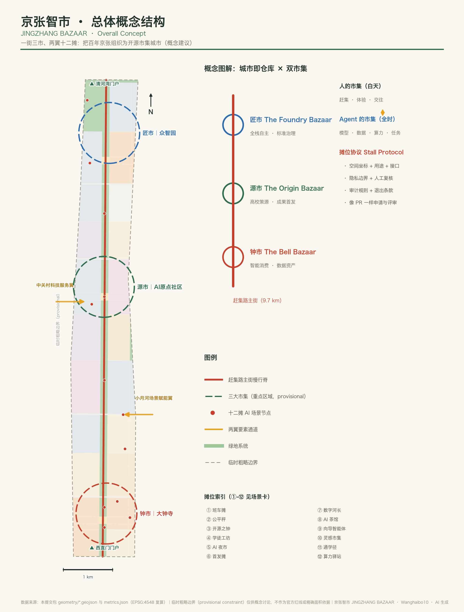
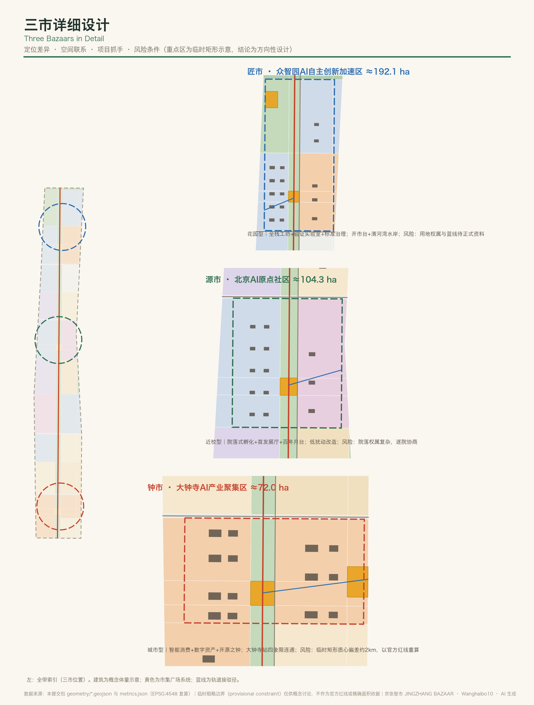
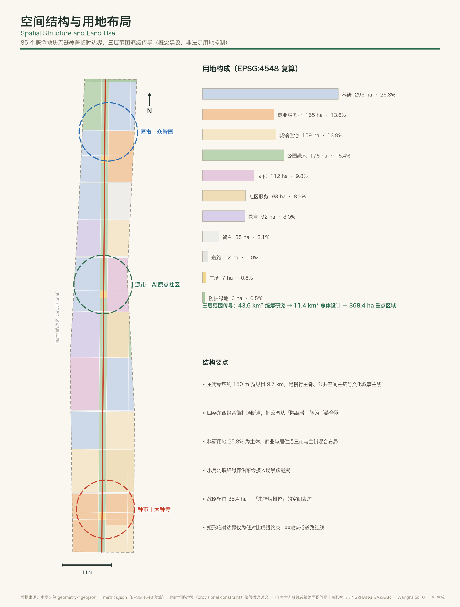
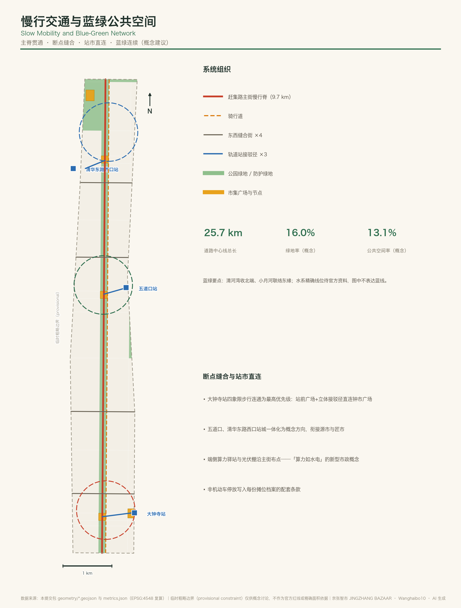
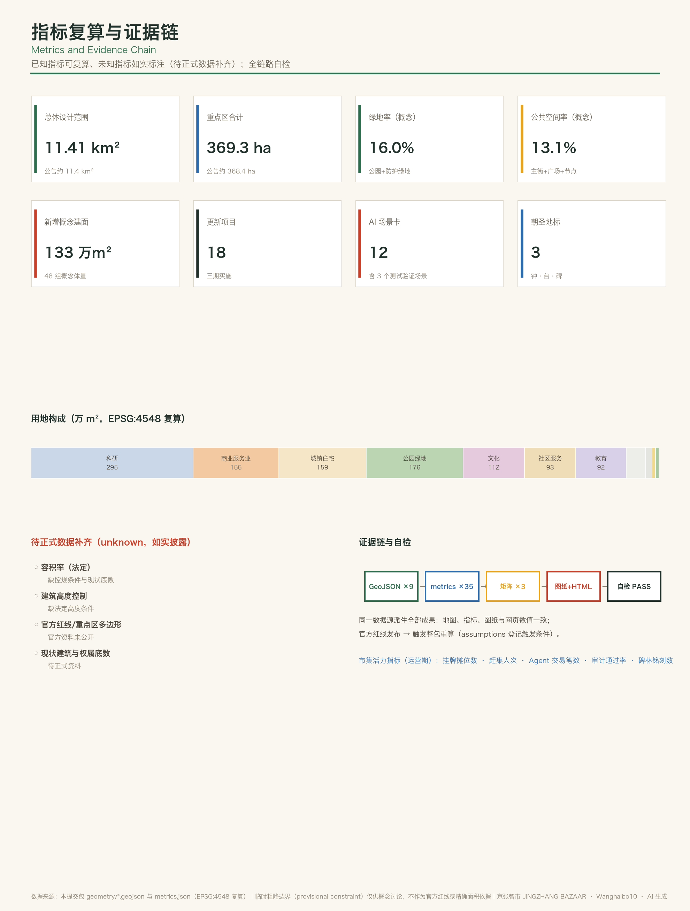

| 层级 | 规模 | 职能 |
|---|---|---|
| 统筹研究范围 | ≈43.6 km² | 三区两翼 · 生态要素汇集（市从何来） |
| 总体设计范围 | ≈11.4 km² | 一街三市骨架（市在何处） |
| 重点区域范围 | ≈368.4 ha | 三市详细设计（市如何开） |
| 市集 | 公告面积 | 定位 |
|---|---|---|
| 匠市 · 众智园AI自主创新加速区 | ≈192.1 ha | 花园型 · 全栈自主与标准治理 · 开市台/清河湾 |
| 源市 · 北京AI原点社区 | ≈104.3 ha | 近校型 · 高校策源与成果首发 · 首发广场/百年月台 |
| 钟市 · 大钟寺AI产业聚集区 | ≈72.0 ha | 城市型 · 智能消费与数据资产 · 钟市广场/开源之钟 |



| ①★ 班车摊 L4接驳测试段 | ② 公平秤 算法审计站 | ③ 开源之钟 发布广场 | ④★ 学徒工坊 机器人测试场 |
| ⑤ AI夜市 智能原生消费街 | ⑥ 首发摊 demo day | ⑦★ 数字河长 水岸传感智能体 | ⑧ AI茶馆 长者数字驿站 |
| ⑨ 向导智能体 文化导览 | ⑩ 灵感市集 创作者集市 | ⑪ 通学径 通学廊道 | ⑫ 算力驿站 端侧算力桩 |
★ 为产业测试验证场景。每摊一份摊位协议档案：空间坐标+用途+接口+隐私边界+人工复核+审计+退出条款。
| 任务 | 响应 | 落点 |
|---|---|---|
| 公告 1.3/1.4/1.5 | 征集目的 · 三层范围 · 设计任务全覆盖 | compliance_matrix.json 17 条 |
| agent.1 概念与命名 | 京张智市 / JINGZHANG BAZAAR · 市街摊集命名语法 · Logo 方向 | 统筹研究章 |
| agent.2 创新生态 | 8 个全球案例 · 城市即仓库 · 摊位协议 | 统筹研究章 |
| agent.3 场景赋能 | 12 场景卡（3 测试验证）· 6 类画像 · 场景-空间-运营映射 | AI 创新生态章 |
| agent.4 公共空间与地标 | 开源之钟 · 百年月台 · 模型碑林 · 赶集砖荣誉体系 | 蓝绿空间章 |
| agent.5 文化叙事 | 三次赶集叙事 · 站名牌导视 · 轨距 1435mm 模数 | 蓝绿空间章 |
| agent.6 活动与运营 | 开市节 · 赶集日 · 鸣钟发布 · 城市仓库社区 · 四级转化漏斗 | 更新项目章 |
deterministicspatialvisualprofessional 本地四项自检 PASS（详见 self_check.json）
保留 provisional 精度提示（KEY_AREA_PROVISIONAL，minor）；组织方数据缺口不阻断内容评分。
| 来源 | 用途边界 |
|---|---|
| 资格预审公告（官方） | 三层范围与设计任务主控依据 |
| 面向智能体任务书（清权） | 六项任务、共创原则与边界条款 |
| 强制专业标准 ×5 | 城市设计办法 / 控规办法 / 用地分类等，本地快照引用 |
| 临时粗略边界（维护者） | 仅供生成与自检；非官方红线 |
| 案例背景集（background_only） | 8 个全球创新街区案例，仅定性参照 |
| ID | 内容 |
|---|---|
| A-BOUNDARY-001 | 临时边界已知偏差（遗址公园位置 / 大钟寺质心）→ 官方红线发布后整包重算 |
| A-DESIGN-001 | 用地/绿地/公共空间/道路/分期为概念设计，非法定控制 |
| A-DESIGN-002 | 建筑为概念体量；容积率与高度控制 unknown，待控规与现状底数 |
| A-CONTROLS-001 | 法定控制、红线、权属、市政与工程约束须官方附件确认 |
